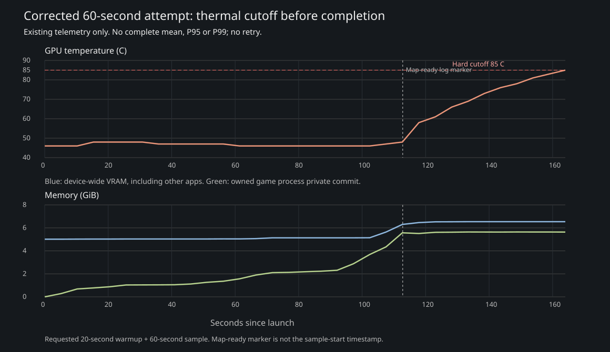

whole labels minimized
Frozen 3.5 km heightfield. Materials, shore masks and regional population remain provisional.


Frozen geography; candidate remains opt-in. Dwarf exterior, road surfaces, shore masks and sparse regional art remain provisional. The corrected 60-second performance attempt hit the unchanged 85 C cutoff before completion. Cooked input, fresh-load, Human authored battle/return and the representative 40-move transport journey pass. These capped functional runs are not performance acceptance. Three Human material fallbacks and unresolved cooked dependencies remain; see runtime diagnostics.
Handoff · Save compatibility · Six-faction groundwork · Native route receipt · Final route/coverage review · Cooked material/dependency defects
Frozen 3.5 km heightfield. Materials, shore masks and regional population remain provisional.
Canonical topology and all 36 physical anchors preserved. Roads remain over-regular in several open areas.


Existing shared trunks retained; no new Human city or terrain edits.


Capital size and arrival preserved. Human authored-city framework unchanged.


Six local Crownspine curve improvements pass grade sampling; angular switchbacks remain.


UNCHANGED PROVISIONAL exterior. No additional Dwarf research or miniature iteration.


Cooler native pine variants; harbor landing detail below. Full Viking capital remains unintegrated.


Native field defenses, local road fillets and restrained Mesa material feathering. Source transition remains visible.


Exact forest XY placements retained; owned pine/broadleaf variants replace the two-family uniformity. Sharp river-bank masks remain.


A local road fillet retained. Trial masonry rejected after close review; fortress-horizon identity remains unfinished.


Prior qualified masonry/timber crossing preserved.


Existing qualified crossing function preserved; art remains provisional.


Unbridged and unchanged; 21.76054 degrees native sampled maximum.


Existing qualified crossing function preserved; art remains provisional.


Existing qualified crossing function preserved; art remains provisional.


Both physical ferry passages retained; seven legal pairs use them. No boat animation claimed.


Road widths and native terrain relief preserved; materials remain provisional.


40 actual legal moves, six ferry legs, zero teleports or ownership overrides. Functional travel passes; Viking, Nature and Dark seats visibly remain incomplete. The ferry frame follows the destination while the walking party is hidden; it does not depict an animated boat. This is representative coverage, not runtime traversal of all 51 edges.


The single corrected native 1080p attempt requested 20 seconds of warmup and 60 measured seconds. It stopped at 85 C before producing a complete sample; no average/P95/P99 result is claimed. Thermal receipt.

These two trial fragments are persistently hidden in game with collision disabled; the editor-session hide must be reapplied if reopening them. They read as isolated thin walls, not convincing ruins. Preserved as rejection evidence only.